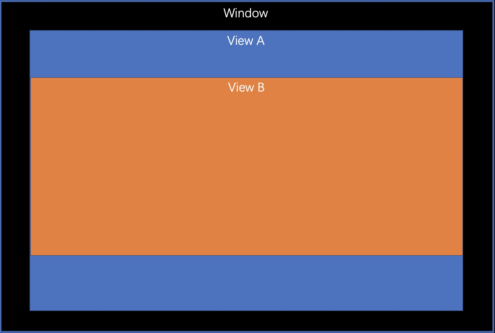
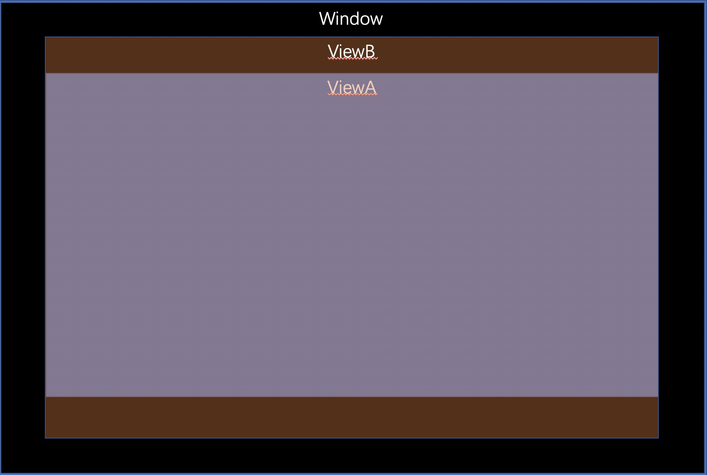

HitTest解决的问题
- 为什么可见的View接收不到鼠标点击事件？
- 如何使得较小的View接收超过View大小的事件？
- 如何通过View获取到管理它的ViewController？
HitTest的表现
下图ViewB是ViewA的子View，并且ViewB的大小小于ViewA。

实验结果：当鼠标左键单击ViewB，ViewB可以正常获取到鼠标事件。下图ViewB是ViewA的子View，但是ViewB的大小大于ViewA，并且ViewA的masksToBounds属性设置为NO;

实验结果：虽然ViewB是可以正常展示的，但是当鼠标左键单击在ViewB超出部分的时候，ViewB无法获取到鼠标事件。
HitTest的原理
为什么明明点击了子视图，但是却没有响应鼠标事件
我们都知道APPKit基于hitTest:来确定一个事件的响应链，这个确定响应链的操作是自上而下的，当mouseDown位置超出父View的视图边界，hitTest:方法将忽略这个视图和它的所有子视图。所以，即使当视图的masksToBounds属性为NO，子视图超过视图的边界，鼠标真实点击到这个子视图，鼠标事件也不会被响应。
HitTest的应用场景
如何使得较小的View接收超过View大小的事件？
可以通过重写hitTest:方法，扩大subview的处理范围实现1
2
3
4
5
6
7
8
9
10
11
12
13
14
15- (NSView *)hitTest:(NSPoint)point {
for (NSView *subview in self.subviews) {
CGPoint convertedPoint = [subview convertPoint:point fromView:self];
convertedPoint.y+=self.documentVisibleRect.origin.y;
NSView *hitTestView = [subview hitTest:convertedPoint];
if (hitTestView) {
return hitTestView;
}
}
return nil;
}如何通过View获取到管理它的ViewController？
通过NSViewController的view属性可以访问到管理的view对象，以及此view的所有subview，但是根据一个view，没有直接的方法可以获取到管理它的NSViewController，这个时候，可以使用responder chain来间接获取。1
2
3
4
5
6
7
8
9NSResponder *responder = self.nextResponder;
do {
NSLog(@"find nextResponder :%@", [responder className]);
if ([responder isKindOfClass:[NSViewController class]]) {
NSLog(@"find %@", [responder className]);
}
responder = responder.nextResponder;
} while (responder);